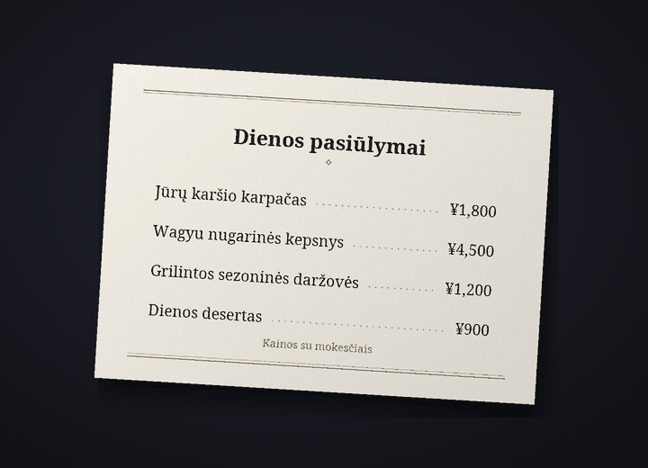

Discord pokalbių vertimo botas
Bendrauk Discord serveriuose savo kalba
Cozirom – tai Discord botas, kuris verčia pokalbį į pašnekovo kalbą. Įjungus vertimą, tavo žinutės skelbiamos išverstos tavo vardu ir su tavo profilio nuotrauka, o tekstas vaizduose taip pat išverčiamas.
Vertimus atlieka AI (Anthropic sukurtas Claude). Jie gali būti klaidingi, todėl svarbiais atvejais patikrink ir originalą.
Ką gali botas
Vienas botas verčia tekstą, vaizdus ir balsą
Planų limitai skaičiuojami vertimais. Viena žinutė, išversta į vieną kalbą, yra 1 vertimas.
Funkcijos: 6
Vertimų kiekis
Automatinis vertimas
Vieną kartą paleisk
/vertimas įjungti, ir tavo žinutės tame serveryje bus skelbiamos pašnekovo kalba, tavo vardu ir su tavo profilio nuotrauka. Originalas lieka smulkiu šriftu po vertimu, o mygtukas parodo visą originalą.
parodo visą originalą.Vertimai1 už žinutę
Tekstas vaizduose
Meniu, žaidimų ekranai, memai: jei vaizde yra teksto, jis perskaitomas ir išverčiamas. Jį atidarai piktograma
 po vaizdais tų, kurie įjungė vertimą, arba dešiniuoju pelės mygtuku. Rezultatą mato tik tas, kuris paprašė, o vaizdai be teksto neskaičiuojami.
po vaizdais tų, kurie įjungė vertimą, arba dešiniuoju pelės mygtuku. Rezultatą mato tik tas, kuris paprašė, o vaizdai be teksto neskaičiuojami.VertimaiPaprastai apie 9 už vaizdą
Vertimas ant vaizdo
Per piktogramą
 gausi vaizdo kopiją, kurioje originalus tekstas ištrintas, o jo vietoje įrašytas vertimas. Iš pradžių parenkamas šriftas „Kaip originale“, artimas originalioms raidėms, o šriftų rinkinį (jų yra iki 15), pavyzdžiui, „Su užraitais“, „Rašysena“ ar „Komiksas“, gali keisti, ir tai neskaičiuojama. Geriausiai tinka horizontaliam tekstui, pavyzdžiui, ekrano nuotraukoms, memams, žaidimų ekranams ir meniu, o rezultatą mato tik tas, kuris paspaudė.
gausi vaizdo kopiją, kurioje originalus tekstas ištrintas, o jo vietoje įrašytas vertimas. Iš pradžių parenkamas šriftas „Kaip originale“, artimas originalioms raidėms, o šriftų rinkinį (jų yra iki 15), pavyzdžiui, „Su užraitais“, „Rašysena“ ar „Komiksas“, gali keisti, ir tai neskaičiuojama. Geriausiai tinka horizontaliam tekstui, pavyzdžiui, ekrano nuotraukoms, memams, žaidimų ekranams ir meniu, o rezultatą mato tik tas, kuris paspaudė.VertimaiPaprastai apie 19 už vaizdą


Pavyzdys: originali nuotrauka (meniu japonų kalba) ir ta pati nuotrauka, kurioje tekstas ištrintas, o jo vietoje šriftu „Su užraitais“ įrašytas vertimas į lietuvių kalbą. Balso žinutės
Spustelėk dešiniuoju pelės mygtuku balso žinutę, išsiųstą iš telefono programėlės, ir pamatysi, kas buvo pasakyta, bei vertimą. Tekstu paverčiamos iki 3 min. trukmės žinutės, o žinutės be kalbos neskaičiuojamos.
Vertimai1 už sekundę ir vertimas10 sek. žinutė – paprastai 11
Keturi tonai
Slengas, laisvas, draugiškas ar oficialus – renkiesi kiekvienam serveriui. Su draugais laisvai, naujoje vietoje oficialiai. Su Guest (nemokamu) planu pirmąsias 14 d. gali naudoti visus keturis, vėliau lieka draugiškas tonas.
VertimaiMokami: visi keturi. Free: pirmąsias 14 d.
Kalbos: 31
Vertimo kalbų skaičius: 31. Boto ekranai ir komandų pavadinimai rodomi Discord kalbomis (jų yra 30), todėl ir pašnekovas botą nusistato savo kalba.
VertimaiVertimo kalbų: 31, rodymo kalbų: 30

Pirmieji žingsniai
Trys žingsniai, ir vertimas pasirodo tavo vardu
Pridėk botą į serverį
Serverio administratorius prideda botą prie serverio. Kvietimo nuorodos paprašyk čia: pagalbos serveris.
Įjunk vertimą
Kas nori, kad jo žinutės būtų verčiamos, tame serveryje paleidžia komandą
/vertimas įjungti. Botas atspėja tavo ir pašnekovo kalbas ir atidaro nustatymų skydelį. Jei jos neteisingos, pakeisk jas išskleidžiamuosiuose meniu.Rašyk kaip įprastai
Rašyk kaip įprastai, ir vertimas bus paskelbtas tavo vardu. Pradėk nuo Guest (nemokamo) plano, o prireikus daugiau pakeisk planą planų puslapyje.
Privatumas
Verčiamos žinutės ir vaizdai siunčiami tik bendrovei Anthropic (JAV), o balso žinučių garsas – tik bendrovei Google (JAV). Paskelbto vertimo originalą botas saugo 14 dienų, o talpykloje esančius vertimus – 30 dienų, ir nesaugo vaizdų, garso ar iš jų perskaityto teksto. Pokalbių turinys niekada nepatenka į žurnalus, o komanda /vertimas ištrinti-duomenis bet kada ištrina tavo duomenis.